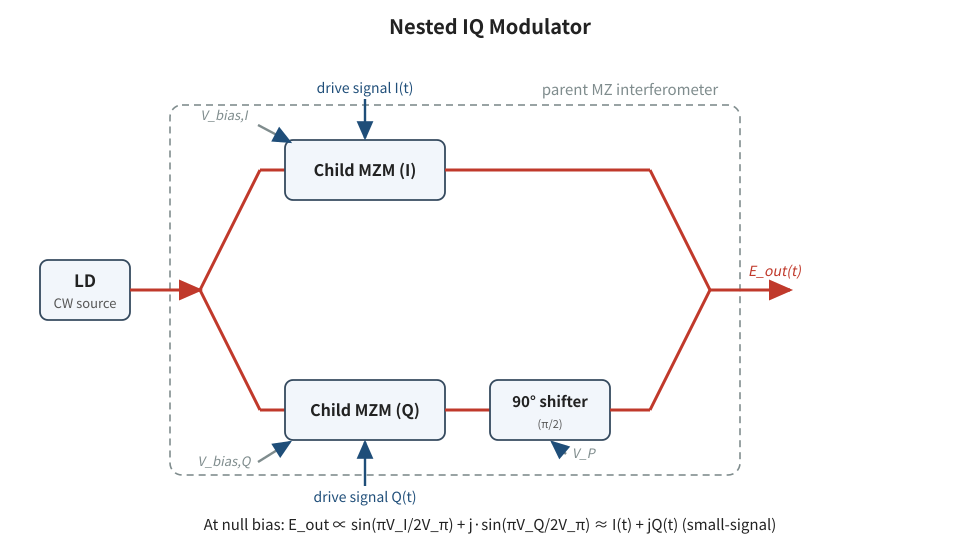
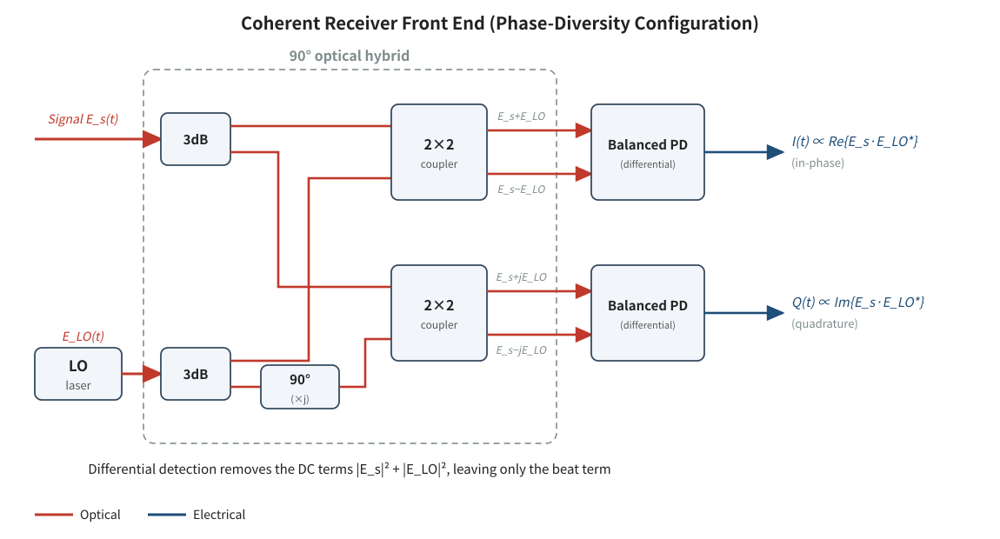
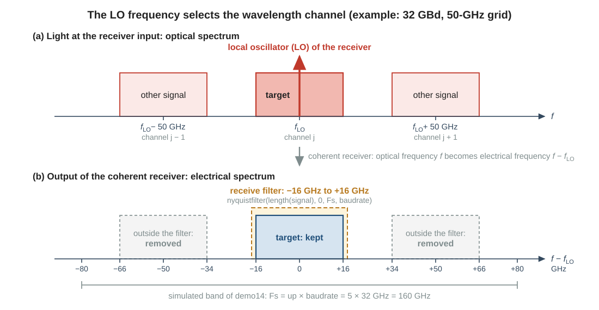
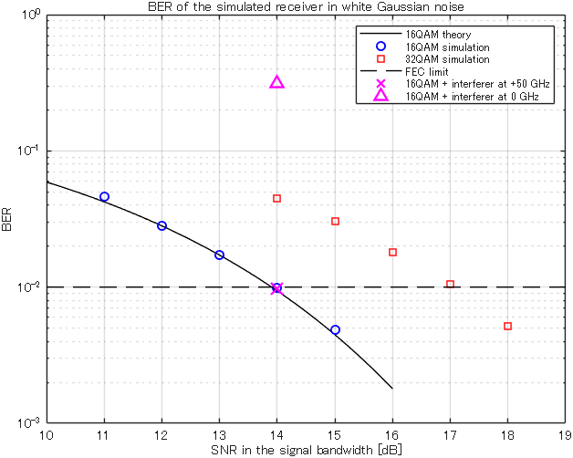

Background
14Coherent receiver, DSP and BER
A coherent receiver turns the light of one wavelength channel back into complex samples. The simulation then filters these samples, equalizes them, decides the symbols and counts the bit errors. This page explains these steps and tells you when a bit error ratio (BER) is low enough. It also shows why a coherent receiver removes a signal on another wavelength: the proposed switch relies on this property.
matlab/demos/demo14_coherent_rx_dsp_ber.mLibrary: nyquistfilter, apply_filter, adequalizet, my_qamdemod, measure_BER_QAM, freqoff1. Why you need this
Every result of this project is decided at the receiver. The scripts of pages 21 and 22 send a signal through a switch and ask one question: is the bit error ratio (BER) at the receiver low enough? The feasible port count is the port count of the largest switch for which the answer is yes. To read these results, you must know how the receiver gets from a noisy field to a BER, and how far you can trust a simulated BER.
The receiver is also the place where the idea of your research works. The signal that a script follows through the switch, and whose BER it measures, is the target signal. In a switch, a little light of other signals leaks into the path of the target signal (page 16). A coherent receiver detects only a narrow band of frequencies around the frequency of its own laser. A leak on the wavelength of the target signal lies inside this band and disturbs it like noise. A leak on another wavelength lies outside this band and is removed. In the proposed switch, the signals that meet in one third-stage switch can have different wavelengths (page 23).
A coherent receiver selects one wavelength channel with the frequency of its own laser, the local oscillator. Only what lies on this wavelength reaches the decision. In the simulation, the receiver has three steps, each done by library functions: the receive filter, the equalizer and the bit-error count.
The numbers and the statements about the switches on this page come from the code and from the two papers of the laboratory, called the JLT paper and the JOCN paper below. The general description of the coherent receiver and of error correction is textbook knowledge. The third item is the reference that the JLT paper cites for its digital coherent receiver. Read it when you want to know what a real receiver does.
- Mitsuya et al., "Three-Stage Optical Circuit Switch Architectures for Intra-Datacenter Networking," J. Lightw. Technol., vol. 43, no. 2, pp. 400-407, 2025 (doi 10.1109/JLT.2024.3465208)
- Nagai et al., "Design and Verification of Large-Scale Optical Circuit Switch Using ULCF AWGs for Datacenter Application," J. Opt. Commun. Netw., 2018
- M. S. Faruk and S. J. Savory, "Digital signal processing for coherent transceivers employing multilevel formats," J. Lightw. Technol., vol. 35, no. 5, pp. 1125-1141, Mar. 2017
2. From the transmitter to the receiver: the complex field
The IQ modulator
In the practice chapters, a QAM symbol was a complex number. In a real transmitter, light carries this number. A laser emits light with a constant amplitude and one optical frequency, the carrier. An IQ modulator (Fig. 1) splits this light into two arms. A modulator in the first arm multiplies the field by the real part \(I(t)\) of the signal. A modulator in the second arm multiplies the field by the imaginary part \(Q(t)\). The second arm then gets a phase shift of 90°, which is a multiplication by \(j\), and the two arms are combined. The field at the output is the carrier multiplied by \(I(t) + jQ(t)\). This factor is the complex envelope that you know from the practice chapters.

In the code, the function TL_QAM stands for the laser and the IQ modulator (page 13). Its output signal is the complex envelope with up samples per symbol; up is the oversampling rate. The carrier itself is never simulated: the frequency 0 Hz of the simulation stands for the carrier frequency.
The coherent receiver
A photodiode converts light into an electrical current that is proportional to the power \(|E|^2\) of the field \(E\). The phase of the field is lost. This is direct detection, which the practice chapters used for OOK. It cannot detect QAM. A coherent receiver (Fig. 2) measures the complex field. It contains its own laser, the local oscillator (LO). An optical element with two inputs and four outputs, the 90° hybrid, adds the LO field \(E_{\mathrm{LO}}\) to the signal field \(E_s\) with four different phases. Two balanced detectors convert the four outputs into two electrical signals \(I(t)\) and \(Q(t)\). A balanced detector is a pair of photodiodes whose currents are subtracted. The two electrical signals form one complex signal:

The LO field has a constant amplitude and the frequency \(f_{\mathrm{LO}}\), so \(E_{\mathrm{LO}}(t) \propto e^{\,j2\pi f_{\mathrm{LO}} t}\). Write the signal as a complex envelope \(A(t)\) on a carrier of the frequency \(f_c\), that is \(E_s(t) = A(t)\,e^{\,j2\pi f_c t}\). The complex conjugate in equation (1) changes the sign of the LO frequency in the exponent, so the two frequencies are subtracted:
The receiver outputs the complex field of the signal, with every frequency counted from the LO frequency. If the LO has the frequency of the carrier, \(f_{\mathrm{LO}} = f_c\), the output is \(A(t)\): the complex envelope that the IQ modulator put on the light.
The scripts contain no code for Fig. 2. The simulated field is already the complex envelope around the carrier of the target signal. This is the output of an ideal coherent receiver: its LO has exactly the frequency of that carrier, and its detectors add no noise. A real receiver must correct the frequency and the phase of its LO in its digital signal processing (DSP), the calculations on the sampled signals \(I\) and \(Q\). The experiment of the JOCN paper names three DSP steps: polarization recovery, adaptive equalization and phase recovery. The simulation keeps only the equalizer (section 4). The header of step22_three_stage_one_point lists laser phase noise under "Not simulated".
Polarization multiplexing
Light in a fiber has two polarizations: two directions of the field that are perpendicular to each other. Each of them can carry its own signal. Polarization multiplexing uses both. The transmitter has two IQ modulators and sends an independent QAM signal of equal power on each polarization. This is the "DP" (dual polarization) in the names DP-16QAM and DP-QPSK of the two papers. The receiver separates the two polarizations and has the structure of Fig. 2 for each of them.
The simulation calculates one polarization only. It assumes that the receiver separates the two polarizations perfectly: the second polarization behaves like the first and does not disturb it. The transmitter power \(P_{\mathrm{Tx}}\) (PTx) is the power of both polarizations together, so the simulated polarization carries half of it. Block [1] of the two step scripts, step21_two_stage_one_point and step22_three_stage_one_point, contains this line:
pin = PTx - 3*pol_flag; % power of the simulated polarization [dBm]pol_flag = 1 means polarization multiplexing, and both scripts use this value. A half is 3.01 dB; the code subtracts 3 dB. With the default PTx = -4 of step21_two_stage_one_point, pin is -7 dBm. The same 3 dB appears again at every amplifier, because the two polarizations share its output power (page 15).
3. The local oscillator selects the wavelength
The switch of this project uses \(N = 96\) wavelength channels. A wavelength channel is one of the optical frequencies on which a transmitter can send. Frequency and wavelength describe the same light, so this page uses the two words side by side. The carriers of the channels lie on a grid with a spacing of 50 GHz (both papers). The light that reaches a receiver can contain more than one channel: the target signal on channel \(j\) and, for example, a leak of another signal on channel \(j+1\). Equation (2) holds for each signal separately. Let the LO have the frequency of the carrier of the target signal. Then the target signal appears around 0 Hz, and the other signal appears around +50 GHz (Fig. 3).

A signal with the symbol rate \(B\) (the baud rate, baudrate in the code) and a roll-off of 0 occupies the band from \(-B/2\) to \(+B/2\) around its carrier (page 13). At 32 GBd, the target signal occupies -16 GHz to +16 GHz after the receiver, and the signal on the next channel occupies 34 GHz to 66 GHz. The electrical part of a coherent receiver, from the photodiodes to the digital filter, passes only a band of about the symbol rate around 0 Hz. The other signal lies outside this band, so the receiver removes it. No optical filter is needed for this. To receive another channel, the receiver tunes its LO laser to that channel.
In the conventional three-stage switch, every leak inside a third-stage switch has the wavelength of the target signal (page 22). In Fig. 3(b) such a leak lies at 0 Hz, on top of the target signal, and no filter can remove it. In the proposed switch, signals with different wavelengths can meet in one third-stage switch (page 23). A leak on another wavelength lies 50 GHz or more away from the target signal, and the coherent receiver removes it.
The JOCN paper notes that the de-interleaver in front of its AWGs (for both devices see page 17) can be replaced by a 1 × 2 splitter if a coherent receiver is used and the higher loss is acceptable. The paper does not give the reason; the natural reading is that it relies on the property of this section. This package uses the 1 × 2 splitter in that place. The JLT paper states that in Scheme A, the conventional three-stage switch of this project, a coherent receiver handles one frequency only, because the frequency at an output port of the switch does not vary. Its LO can then stay on one frequency. In the proposed switch the wavelength at a receiver can depend on where the signal comes from; page 23 comes back to this.
The simulation uses an ideal rectangular receive filter. It removes everything outside the band of the target signal completely, however strong it is. No real receiver does this: how well it rejects a signal on another channel depends on its hardware and on the frequency difference. The scripts of pages 21 and 22 use this filter too. Keep it in mind when you read the assumptions of the model on those pages. For the proposed switch it is one of the decisions that you must justify (page 23).
In the code: the receive filter
The simulation has no variable for the LO. The frequency 0 Hz of every simulated field is the carrier of the target signal, and this is also the LO frequency. The receive filter is a rectangular mask around 0 Hz (a mask is a column with one factor per frequency, page 13):
H = nyquistfilter(length(signal), 0, Fs, baudrate*(1+rolloff));The second argument is the center of the passband in Hz: 0 means the LO frequency. The fourth argument is the full width of the passband in Hz. With rolloff = 0 it is the symbol rate, and the mask passes the frequencies \(-B/2 \le f \lt +B/2\). The comments in the code call this filter a brick wall.
In the code: a signal on another wavelength
The function freqoff(x, foff, fsam) moves a signal to another channel. It multiplies the field x by \(e^{\,j2\pi f_{\mathrm{off}} t}\), as in equation (2), so the spectrum moves up by foff (in Hz; fsam is the sampling rate). The header of the function gives two rules.
- The shifted signal must fit into the simulated band, the interval from \(-F_s/2\) to \(+F_s/2\) that the samples can describe (page 13). A part that leaves this band on one side comes back on the other side. The signal has the bandwidth \((1+\alpha)B\), where \(\alpha\) is the roll-off factor (
rolloffin the code, page 13). The outer edge of the shifted signal therefore lies at \(|f_{\mathrm{off}}| + (1+\alpha)B/2\). The caller must check that this edge lies inside the simulated band:
foffmust be a multiple of the bin spacing \(F_s/n_{\mathrm{samp}}\) of the FFT, where \(n_{\mathrm{samp}}\) is the number of samples. Otherwisefreqoffstops with an error. It also stops ifabs(foff)is not smaller thanfsam/2.
| Symbol rate | Band of the target signal | Band of the other signal | \(F_s\) needed | Smallest up (\(F_s\)) |
|---|---|---|---|---|
| 24 GBd | -12 GHz to +12 GHz | 38 GHz to 62 GHz | 124 GHz | 6 (144 GHz) |
| 32 GBd | -16 GHz to +16 GHz | 34 GHz to 66 GHz | 132 GHz | 5 (160 GHz) |
The two step scripts use up = 2, which gives 48 GHz and 64 GHz. This is enough for them, because they add leaks only on the wavelength of the target signal and never shift a signal (see the note on up in section 1 of each step script). It is not enough for a signal on the next channel. The demo of this page puts a signal on the next channel, so it uses up = 5 (160 GHz).
4. Receiver processing in the simulation
Fig. 4 shows what the scripts do with the field that arrives at the receiver.
![Chain of five blocks: coherent detection (ideal, no code), receive filter (nyquistfilter, apply_filter), adaptive equalizer (adequalizet), decision (my_qamdemod) and bit-error count (measure_BER_QAM), which outputs the BER. In front of the equalizer the signal has up samples per symbol (up is the oversampling rate); behind the equalizer it has one sample per symbol. Below the chain, a bar shows the transmitted symbols: symbols 1 to 10000 train the equalizer, symbols 10001 to 30000 are counted in the BER.](assets/fig/fig_rx_dsp_chain.svg)
up is the oversampling rate. The bar shows which of the transmitted symbols the receiver uses for what; the numbers are for datasize = 3e4.Block [10] of step21_two_stage_one_point is the whole receiver, and step22_three_stage_one_point uses the same calls:
% [10] Coherent receiver and BER (legacy lines 218-229)
% receive filter: brick wall with the width of the signal
H = nyquistfilter(length(signal), 0, Fs, baudrate*(1+rolloff));
signal = apply_filter(signal, H, 1);
% equalizer: trained with the first third of the symbols, then frozen
% (adequalizet does not use its fourth argument; 1/256 is the legacy value)
training_num = floor(datasize/3);
signal = adequalizet(signal, Mary, Morder, 1/256, ...
data_mod(1:training_num), up);
% BER of the symbols after the training (mod_flag bits per symbol)
BER = measure_BER_QAM(signal(training_num+1:end), ...
data(mod_flag*training_num+1:end), mod_flag);Receive filter
The first two code lines are the filter of section 3. apply_filter(signal, H, 1) multiplies the spectrum of the signal by the mask H; the third argument 1 means that no zeros are inserted (page 13). The filter removes every signal outside the band of the target signal. It also removes the noise outside this band. For noise that is equally strong at all frequencies of the simulated band (white noise), the filter keeps the fraction \(B/F_s = 1/\mathrm{up}\) of the noise power. After the filter, the signal still has up samples per symbol.
Adaptive equalizer
On its way through the switch, the signal passes elements that do not treat all its frequencies alike. In step21_two_stage_one_point, for example, the signal passes an arrayed-waveguide grating (AWG), an optical filter that separates the wavelength channels (page 17). Its passband is not centered on the signal, so one side of the spectrum loses more power than the other. Such a distortion spreads every symbol over the instants of its neighbors. This is inter-symbol interference (ISI, page 13). An equalizer is a filter in the receiver that undoes the distortion. An adaptive equalizer finds its coefficients by itself from the received signal.
adequalizet is a filter with Morder + 1 = 17 coefficients, which are called taps (the vector \(\mathbf{c}\)). For symbol \(n\) it takes the 17 received samples around the symbol instant (the vector \(\mathbf{u}(n)\)) and outputs one number, the sum of the 17 products of a tap and a sample:
With up = 2, the 17 samples cover four symbol periods on each side of the symbol instant. The output has one sample per symbol. At the start, the center tap is 1 and all other taps are 0, so the filter passes the signal unchanged. Then the equalizer learns. The receiver knows the first training_num symbols in advance: these are the training symbols \(d(n)\), in the scripts data_mod(1:training_num). After every output, the equalizer compares \(y(n)\) with the known symbol and moves the taps a small step in the direction that makes the error \(e(n) = d(n) - y(n)\) smaller:
Here \(\mathbf{u}^{*}(n)\) is the complex conjugate of the 17 samples, and \(\mathbf{u}^{H}(n)\,\mathbf{u}(n)\) is the sum of their squared magnitudes, the power in the window. This rule is the normalized least-mean-square (NLMS) method: the division by the power of the 17 samples makes the step independent of the signal level. The step size \(\mu\) starts at 1/2 and is halved six times during the training, down to 1/128. Large steps bring the taps close to their final values quickly, and small steps at the end keep the noise from shaking them. After the last training symbol the taps are frozen. This is correct when the path of the signal does not change in time, as in the simulation. In lib/adequalizet.m, equations (4) and (5) are these lines (shown without their indentation):
y(n) = c.'*uu; % filter output = equalized symbol n
e = d(n) - y(n); % error against the known symbol
nom = sum(uu.*conj(uu)) + 0.001; % power in the window (0.001 avoids 0/0)
c = c + pstep/nom*e*conj(uu); % move the taps against the errorThe equalizer also sets the scale. The training symbols lie on the grid of odd integers of my_qammod (page 13), so the output \(y(n)\) lies on this grid too, whatever the power of the received field is.
The outputs for the symbols 1 to training_num were made while the taps were still moving, and the receiver knew these symbols in advance. They say nothing about how well the receiver detects unknown data. The scripts therefore count the bit errors only in the symbols after the training. With datasize = 3e4, training_num = floor(datasize/3) is 10000: 10000 symbols train the equalizer, and 20000 symbols are counted.
Decision and bit-error count
measure_BER_QAM does the last two blocks of Fig. 4. It first calls my_qamdemod, which chooses for every output \(y(n)\) the constellation point with the smallest distance. This is the minimum-distance decision of the practice chapters, also called a hard decision. The result is a symbol number from 0 to \(2^k - 1\), where \(k\) is the number of bits per symbol (mod_flag). measure_BER_QAM then writes every symbol number as \(k\) bits, with the most significant bit first, and compares these bits with the transmitted bits. The BER is the number of wrong bits divided by the number of compared bits:
sym_num = my_qamdemod(Rx_signal, 2^bitsPerSymbol); % hard decision, n x 1
BER = mean(receivedData ~= original_data(:)); % fraction of bits that differ| Call | Argument in the script | Meaning |
|---|---|---|
nyquistfilter | length(signal) | Number of samples of the signal |
0, Fs | Center of the passband in Hz (0 = LO frequency) and sampling rate in Hz | |
baudrate*(1+rolloff) | Full width of the passband in Hz | |
adequalizet | signal | Received signal after the receive filter, a column with up samples per symbol; the samples 1, 1 + up, 1 + 2 up, ... are the symbol instants |
Mary, Morder | Number of constellation points \(2^k\), and the filter order (an even number; the filter has Morder + 1 taps) | |
1/256 | Not used. The argument is kept so that the argument order of the earlier laboratory code stays the same. | |
data_mod(1:training_num), up | Training symbols, and the oversampling rate: the number of samples per symbol of the input | |
measure_BER_QAM | signal(training_num+1:end) | Equalized symbols after the training, one sample per symbol |
data(mod_flag*training_num+1:end) | Transmitted bits of the same symbols | |
mod_flag | Bits per symbol \(k\): 2, 4, 5 or 6 |
data_mod holds symbols, and data holds bits. Every symbol has mod_flag bits, so the bits of the symbols after the training start at index mod_flag*training_num+1, not at training_num+1. measure_BER_QAM stops with an error if the number of bits is not the number of symbols times mod_flag.
5. BER, the FEC limit and the required SNR
The FEC limit
No link is free of bit errors. The transmitter therefore adds check bits to the data, and a decoder in the receiver uses them to correct the errors. This is forward error correction (FEC). The decoder succeeds as long as the BER at its input stays below a limit, the FEC limit. Both papers use the limit \(10^{-2}\), and this project does the same (BER_limit = 1e-2). The FEC itself is not simulated. A connection works if the BER before the error correction is at most \(10^{-2}\): the main scripts, main_two_stage_ULCF and main_three_stage_conventional, search for the lowest transmitter power with BER <= BER_limit.
The SNR that a format needs
The signal-to-noise ratio (SNR) on these pages is the power of the signal divided by the power of the noise inside the bandwidth \(B\) of the signal, the band that the receive filter keeps. For a square constellation with Gray mapping and \(k\) bits per symbol in Gaussian noise, the BER is
The SNR in equation (6) is a ratio, not a value in dB, and erfc is the complementary error function of MATLAB. The formula counts only errors between neighboring points, which is accurate at the BER values of this project. Solving equation (6) for the SNR at \(\mathrm{BER} = 10^{-2}\) gives the required SNR of a format (Table 3).
| Format | \(k\) (mod_flag) | Required SNR | Source | Default format in |
|---|---|---|---|---|
| QPSK | 2 | 7.33 dB | Equation (6) | - |
| 16QAM | 4 | 13.90 dB | Equation (6). The simulated receiver needs 13.96 dB. | step22_three_stage_one_point |
| 32QAM | 5 | 17.06 dB | Simulated receiver. Equation (6) does not apply. | step21_two_stage_one_point |
| 64QAM | 6 | 19.74 dB | Equation (6) | - |
Three remarks on Table 3.
- 32QAM is a cross constellation, not a square (page 13), and its mapping is not a Gray mapping: in
my_qammod, 8 of the 52 pairs of neighboring points differ in more than one bit. Equation (6) does not hold for it. Its required SNR is therefore measured with the simulated receiver. - The simulated receiver needs about 0.1 dB more than equation (6) for 16QAM. The header of
adequalizetgives the reason: with noise, the trained equalizer makes the constellation slightly smaller than the grid. The header ofmain_three_stage_conventionalstates 14.0 dB for this receiver. - The two simulated values have a random error. With twelve different seeds of the random numbers, the demo gives 13.9 dB to 14.1 dB for 16QAM and 16.9 dB to 17.1 dB for 32QAM. The value 17.06 dB in Table 3 is at the upper end of its range: read it as about 17 dB.
Every additional bit per symbol costs about 3 dB of SNR. A switch that must carry 32QAM tolerates less noise and weaker leaks than a switch that carries 16QAM.
How many symbols are enough
A simulated BER is a count of random events, and such a count scatters from run to run. If \(n_{\mathrm{err}}\) bit errors are counted, the relative random error of the BER (its standard deviation divided by its value) is about
With datasize = 3e4, 20000 symbols are counted. That is 80000 bits for 16QAM and 100000 bits for 32QAM. At the FEC limit, the scripts count 800 or 1000 errors, so the random error is about 3.5 % or 3.2 % of the BER. Near the limit, the BER of 16QAM changes by a factor of 1.9 for 1 dB of SNR (equation (6)), so 3.5 % of the BER corresponds to about 0.05 dB. This is far below the steps of 0.5 dB or 1 dB in which the main scripts change the transmitter power. With only 10 counted errors, the random error would be about 30 %. The header of measure_BER_QAM gives the rule: a BER is reliable only if about 100 or more bit errors were counted.
6. Run the demo
In MATLAB, make the folder matlab the current folder and run setup_path (once per MATLAB session). Then run demo14_coherent_rx_dsp_ber. The script needs a few seconds. It prints four lines that begin with Self-check, and each of them must contain passed.
Open the script in the editor and read it next to Table 4. The section numbers are the numbers of the %% sections of the script.
| Section | What it does | Self-check of the result |
|---|---|---|
| 1 | Sets the example: datasize = 3e4, baudrate = 32e9, up = 5 (the step scripts use 2; the interferer of section 5 needs a wider simulated band, see equation (3)), the SNR values 11 to 15 dB for 16QAM and 14 to 18 dB for 32QAM, Morder = 16, and the second signal of section 5, the interferer: xt_ratio_dB = 0 (its power relative to the target signal, in dB) and foff = 50e9 (its frequency offset in Hz). | none |
| 2 | Calculates Fs (160 GHz), the transmit mask Hrcos, the receive filter H and training_num (10000). | none |
| 3 | For each format: one signal from TL_QAM. For each SNR value: white Gaussian noise is added, then the receiver of section 4 follows: apply_filter with H, adequalizet, measure_BER_QAM on the 20000 symbols after the training. | none |
| 4 | Calculates equation (6) for 16QAM and the required SNR of QPSK, 16QAM and 64QAM. Reads the required SNR of the simulated 16QAM and 32QAM from the simulated points: a straight line through \(\log_{10}\mathrm{BER}\) between the two nearest SNR values. Prints the table. | 1: the simulated BER of 16QAM is within 0.1 decades (a factor of 1.26) of equation (6). 2: the required SNR of the simulated 16QAM is within 0.3 dB of equation (6). |
| 5 | Checks equation (3). Makes a 16QAM target at an SNR of 14 dB and the interferer, a second 16QAM signal with other data. Measures the BER in three cases: without the interferer, with the interferer shifted by foff with freqoff, and with the interferer at 0 Hz. | 3: the interferer outside the receive filter does not change the BER. 4: the interferer on the wavelength of the target signal raises the BER. |
| 6 | Runs the four self-checks of the last column and prints one line for each. | none |
| 7 | Draws the figure: BER versus SNR. | none |
Section 3 sets the noise power from the wanted SNR with these two lines (shown without their indentation):
P_noise = mean(abs(signal).^2)*up/10^(snr_dB_ary(q, s)/10); % in Fs [W]
noise = sqrt(P_noise/2)*(randn(datasize*up, 1) + 1i*randn(datasize*up, 1));The noise is white over the whole simulated band, and the receive filter keeps the fraction 1/up of it (section 4). The noise power in the simulated band must therefore be up times the noise power that the SNR allows inside the signal bandwidth. The script prints this text:
BER in white Gaussian noise (20000 symbols counted)
SNR [dB] 16QAM theory 16QAM simulation | SNR [dB] 32QAM simulation
11.0 4.221e-02 4.644e-02 | 14.0 4.507e-02
12.0 2.813e-02 2.810e-02 | 15.0 3.046e-02
13.0 1.716e-02 1.713e-02 | 16.0 1.788e-02
14.0 9.376e-03 9.800e-03 | 17.0 1.043e-02
15.0 4.465e-03 4.875e-03 | 18.0 5.160e-03
Required SNR at the FEC limit 1e-02 [dB]
theory : QPSK 7.33, 16QAM 13.90, 64QAM 19.74
simulation: 16QAM 13.96, 32QAM 17.06
16QAM, SNR 14 dB, interferer/target power 0 dB
no interferer : BER = 9.687e-03
interferer at +50 GHz : BER = 9.687e-03
interferer at 0 GHz : BER = 3.127e-01
Self-check 1 passed: BER of 16QAM = theory within 0.1 decades
Self-check 2 passed: required SNR of 16QAM = theory within 0.3 dB
Self-check 3 passed: interferer outside the receive filter = same BER
Self-check 4 passed: interferer on the same wavelength = higher BERNote three details of this output. The simulated BER of 16QAM is not exactly the theory: every point has the random error of equation (7), here between 1.6 % (3715 counted errors at 11 dB) and 5 % (390 counted errors at 15 dB), and the equalizer adds a few percent (section 5). The BER with the interferer at +50 GHz is the BER without the interferer in every digit: the two runs count the same 775 bit errors, because the receive filter removes the interferer completely. At 0 Hz, the same interferer raises the BER to 0.31, about 30 times the FEC limit.

demo14_coherent_rx_dsp_ber. Black line: equation (6) for 16QAM. Circles and squares: simulated BER of 16QAM and 32QAM. Dashed line: FEC limit. A curve crosses the dashed line at the required SNR of its format. The cross is the 16QAM signal with the interferer 50 GHz away: it lies on the 16QAM curve. The triangle is the same signal with the interferer at 0 Hz.- All four self-checks print
passed, and your figure looks like Fig. 5. - In section 3 of the script, you can point to the receive filter, the equalizer and the bit-error count, and you find the same three calls in block [10] of
step21_two_stage_one_point. - You can explain why the BER with the interferer at +50 GHz is exactly the BER without it.
- You can read the required SNR of 16QAM and of 32QAM from your figure.
Change one parameter in section 1 of the script, predict the result, and then run the script. Set the parameter back before the next experiment.
- Move the interferer: set
foff = 32e9, thenfoff = 24e9. For each value, draw the two spectra as in Fig. 3(b) and predict whether the BER changes. Then tryfoff = 25e9and read the error message. - Make the interferer weaker: set
xt_ratio_dB = -10, then-20, then-30. How weak must an interferer on the wavelength of the target signal be before the BER comes close to the BER without it? Then setxt_ratio_dB = 20and look at the BER at +50 GHz. - Use fewer symbols: set
datasize = 3200. Run the script three times, withrng(1),rng(2)andrng(3)in its first executable line. Before you run it, estimate with equation (7) the random error of the 16QAM point at 15 dB.
What you should see
foff = 32e9: the interferer occupies 16 GHz to 48 GHz. It touches the band of the target signal but does not overlap it, and the BER stays at 9.687e-03.foff = 24e9: the interferer occupies 8 GHz to 40 GHz. A quarter of its spectrum lies inside the receive filter, the BER rises to 1.240e-01, and the script printsSelf-check 3 skipped.foff = 25e9:freqoffstops, because 25 GHz is not a multiple of the bin spacing 160 GHz / 150000 = 1.0667 MHz.- The BER with the interferer at 0 Hz is 1.005e-01, 1.755e-02 and 1.046e-02. Only at -30 dB does the BER come close to the BER without the interferer: it is still 8 % higher. At -20 dB the interferer has 1 % of the power of the target signal, and the BER is still 1.8 times the BER without it. The reason: at an SNR of 14 dB the noise has 4 % of the signal power. The interferer adds 1 %, which lowers the SNR to 13.0 dB, and equation (6) gives 1.69e-02 there. An interferer on the wavelength of the target signal acts like noise of the same power (page 16). With
xt_ratio_dB = 20, the BER at +50 GHz is still 9.687e-03: the ideal filter removes an interferer that is 100 times stronger than the target signal. This is the idealization of section 3. - With 3200 symbols, 2134 symbols are counted, that is 8536 bits. At 15 dB the theory expects about 38 bit errors, so equation (7) gives a random error of about 16 %. In the printed table, the simulated values scatter around the theory. With
rng(2)andrng(3), the point at 15 dB is more than 0.1 decades away from the theory, and the script stops at self-check 1. The script is not wrong: the run is too short for this check. Use 3200 and not 3000: with 3000 symbols, 50 GHz is not a multiple of the bin spacing, andfreqoffstops.
7. Check your understanding
step21_two_stage_one_pointusesbaudrate = 24e9andup = 2. You want to add a leak on the next wavelength channel, 50 GHz away. Which band does the leak occupy after the coherent receiver? Does the receive filter remove it? Whichupdo you need?Answer
The leak occupies 50 GHz ± 12 GHz, that is 38 GHz to 62 GHz. The receive filter passes -12 GHz to +12 GHz, so it removes the leak. Equation (3) demands \(F_s \ge\) 2 × (50 + 12) GHz = 124 GHz. With
up = 2the sampling rate is only 48 GHz, and withup = 5it is 120 GHz. The smallest value isup = 6(144 GHz).step22_three_stage_one_pointhas the defaultPTx = 4(dBm) andpol_flag = 1. What is the power of the simulated polarization in dBm and in mW?Answer
pin = PTx - 3*pol_flag= 4 - 3 = 1 dBm, which is \(10^{0.1}\) mW = 1.26 mW. The transmitter sends 4 dBm = 2.51 mW on both polarizations together.step21_two_stage_one_pointuses 32QAM anddatasize = 3e4. How many bits does it compare? With its default values it prints763 errors in 100000 bits. How large is the random error of this BER?Answer
training_numis 10000, so 20000 symbols are counted. With 5 bits per symbol, that is 5 × 20000 = 100000 bits. Equation (7) gives \(1/\sqrt{763}\) = 3.6 %: the printed BER 7.630e-03 has a random error of about 0.28e-03.- With their default values,
step22_three_stage_one_point(16QAM) prints a simulated SNR of 14.19 dB, andstep21_two_stage_one_point(32QAM) prints 17.40 dB. Use Table 3 to decide whether each BER is below the FEC limit, and state the margin in dB.Answer
The simulated receiver needs 13.96 dB for 16QAM and 17.06 dB for 32QAM. Both scripts are above these values, by about 0.2 dB and 0.3 dB, so both BER values are below the FEC limit. The scripts print 8.700e-03 and 7.630e-03. The margins are small: both default points lie just below the limit.
- A leak has the wavelength of the target signal. Why can no filter in the receiver remove it? What decides how much it disturbs the target signal?
Answer
After the coherent receiver, the band from \(-B/2\) to \(+B/2\) holds the target signal and the leak together. A filter selects by frequency, so every filter that passes the target signal passes the leak too. Only the power of the leak relative to the target signal counts: the leak acts like noise of the same power and lowers the SNR (the second experiment of section 6, and page 16).
- The scripts call
adequalizetwithMorder = 16. How many taps does the equalizer have? How many symbol periods does its window cover withup = 2? Why are the outputs for the firsttraining_numsymbols not counted in the BER?Answer
The equalizer has
Morder + 1= 17 taps. The first and the last sample of the window are 16 samples apart, which is 16 / 2 = 8 symbol periods: four on each side of the symbol instant. The firsttraining_numoutputs were made while the taps were still moving, and the receiver knew these symbols in advance. They do not show how well the receiver detects unknown data.
A coherent receiver detects the band of the width \(B\) around its LO frequency. A signal on another wavelength channel lies outside this band and is removed; a signal on the wavelength of the target signal stays and acts like noise. In the simulation, a connection works if the BER of the symbols after the training is at most \(10^{-2}\): 16QAM needs an SNR of about 14 dB for this, and 32QAM about 17 dB. The next pages show where the SNR comes from: the noise of the amplifiers (page 15) and the leaks of the space switches (page 16).